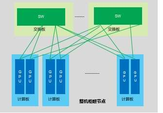
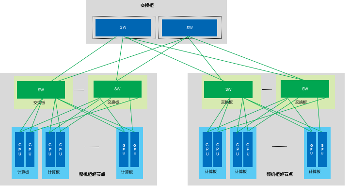

标准构型（全对等互联 + 以太型）¶
超节点 Scale-Up 技术旨在实现单机柜或相邻机柜内 32 卡以上规模的 GPU/NPU 高速、低延迟、全互联组网，使多卡系统在逻辑层面呈现为单一超级计算单元，并支撑内存语义及 TP/EP 并行计算模式。传统方案长期依赖 NVIDIA NVLink，其性能突出，但私有封闭架构也限制了跨厂商协同与开放生态发展。自 2025 年起，基于以太网的技术路线开始加速推进：国内以 ETH-X、CLink 为代表，国际则有 SUE、ESUN 等多条方案并行演进。
从理论层面看，大模型训练与推理的通信复杂度可写为 \(O(L \times d \times N \times B)\)，其中 \(L\) 为序列长度，\(d\) 为隐层维度，\(N\) 为层数，\(B\) 为批大小。当模型进入 MoE 与长上下文时代，卡间通信会呈现小包高频、高并发、强同步、低时延容忍等特征，传统以太网难以直接满足这类需求；增强型以太 Scale-Up 协议则通过头部压缩、链路重传、信用流控和无阻塞交换等机制，将通信效率从传统以太网的 30%–45% 提升至 92%–98%，逼近 NVLink 级通信效率。
本节讨论基于以太网技术的 Scale-Up 互联协议，重点分析其架构特点、组网方式、主流实现及后续演进方向。
架构定义、组网描述与未来演进 ¶
目标问题 ¶
传统技术痛点凸显于大规模模型训练与推理场景，当前万亿参数 MoE 架构大模型需采用张量并行（TP）与专家并行（EP）策略，单卡显存容量与算力资源均难以独立支撑，亟需通过 Scale-Up 技术实现卡间直接 Load/Store 访问及内存共享机制。TP 并行要求卡间 All-Reduce 延迟 <1 us 才能保证计算通信比 >8:1；EP 并行要求专家路由报文端到端抖动 <100 ns，否则会造成算力气泡与训练收敛损失。然而，NVIDIA NVLink方案存在生态封闭、产业协同困难、总体拥有成本高昂等固有局限，制约了技术普惠与产业健康发展。
主流方案 ¶
以太网技术路线由此切入。在 Scale-Out 网络层面，以太网化趋势已经确立（RoCE 与 InfiniBand 技术路线并行发展Scale-Up 领域，这一路线更强调降低总体拥有成本（TCOGPU 异构协同，并复用成熟的以太网物理层技术。2024 至 2025 年间，该领域出现了多条快速推进的协议路线。
表 1 国内 & 国外主流的基于以太网的 Scale-Up 协议
| 协议 / 方案 | 发起方 / 时间 | 支持规模 | 核心技术亮点 | 组网拓扑 | 典型延迟 / 带宽 | 代表超节点应用 |
|---|---|---|---|---|---|---|
| ETH-X | ODCC/ 腾讯（2024-） | 单柜 64+，扩展万卡 | RoCE 开放 Ethernet、背板连接器、风液混合 | Fat-Tree / 背靠背 | 204.8 Tbps/ 柜（扩展 409.6 Tbps） | 华勤 ETH-X AI RACK、锐捷 ETH 128 |
| SUE (Scale-Up Ethernet) | Broadcom/OCP（2025.4） | 1024 XPU | AFH（AI 转发头，10 字节 |
单跳交换 / Mesh | <400 ns RTT、9.6 Tbps/ 卡聚合 | Tomahawk Ultra 交换机方案 |
| ESUN | OCP（2025.10） | 灵活（与 SUE 配合） | 开放 Ethernet 帧 / 无损 / 头优化、互操作 | 交换机 + NIC 统一 | 结合 SUE 实现低开销 | 国际开放超节点 |
| UEC (Ultra Ethernet) | UEC 联盟（2026.1 v1.0.2） | AI/HPC 百万主机 | 传输层优化（AI Base/Full/HPC 剖面 |
灵活（Scale-Up 专用传输） | 优化小包 + 低尾延迟 | 国际主流（微软 / 谷歌等） |
| CLink | 工信部及电子四院（2025.10） | 最大 1024 | 支持标准以太帧及头部优化、LLR、CBFC、轻量化 FEC | 单跳交换 / Mesh | 单端口 400G/800G，支持多链路聚合，整机带宽可到 TB 级 | 国家标准 CLInk 超节点 |
NVLink 单端口成本约为增强以太的 3.5–5 倍，整机柜 TCO 高出 40%–60%；而增强型以太 Scale-Up 可在标准以太网硬件基础上，实现延迟 <400 ns、带宽利用率 >95%、丢包率 <1e-12 的类 NVLink 性能。
上述协议的核心共性是“寄生在标准以太网之上”：
- 物理层：
100%或高度复用IEEE 802.3 SerDes（112G/224G等） ，支持标准OSFP/QSFP-DD端口、插损预算、CPO/LPO光模块、Retimer等。 - 链路层：前
14B（DA 6B + SA 6B + Ethertype 2B）结构完全不变，仅重定义字段含义或插入轻量自定义头。理论分析显示，通过优化头部（如SUE的AFH） ，可将协议封装开销占比从传统以太网的约8%（64 字节小包）降低至不足2%，显著提升有效带宽利用率。FCS/CRC保持标准。交换机可直接转发，无需专用ASIC或固件修改。
组网描述 ¶
超节点整机柜需支持不少于 32 个 GPU/NPU 的 Scale-Up 互联系统。以整机柜超节点构建的高带宽域（HBD, High Bandwidth Domain）为基本单元（覆盖 32 卡至 64 卡规模Scale-Up 交换板实现纵向扩展（区别于通过参数面 Scale-Out 的横向扩展方案HBD 域超节点内部组网架构及扩展组网方案。

图 1 整机柜超节点内部 Scale-Up 组网

图 2 通过交换柜完成超节点纵向扩展
超节点基于以太网的全对等互联特点：
从互联角度分析，以太型超节点以高性能以太网为基础，构建面向智算集群的高速、高密、低时延、可扩展通信架构：
- 在互联规模上，单节点支持多算力芯片高速互联，单机柜可实现百卡级算力单元无阻塞组网，规模上限取决于以太
Scale-Up交换芯片的Radix指标（例如Radix指标为 512 的博通Tomahawk5以太交换芯片最多可支持 512 卡GPU构建单跳超节点） ，同时可以通过两层交换互联支持线性扩展至数千卡超节点集群。 - 在带宽能力上，单链路支持
200G/400G/800G以太网速率，整机柜互联带宽达到百Tbps级，采用1:1无阻塞交换设计。 - 在实时性方面，单层交换超节点内端到端通信时延
<=1 us，两层交换超节点间通信时延<=2 us，抖动<=100 ns。 - 在硬件扩展性上，单机柜高速光端口密度
>=256个，支持多层级、多拓扑灵活组网，可满足超大规模 AI 集群对高可靠、低时延、高同步通信的规模化部署要求。
软硬件组网：利用成熟以太网生态 ¶
这些协议利用以太网成熟软硬件生态的核心策略是“最大化复用、最小化创新”：它们不重新发明物理层、交换机和管理工具，而是尽量借用已有数据中心以太网的供应链体系、开源软件栈和运维经验，以更低成本实现多厂商异构兼容，并支持跨厂商 GPU/NPU 互联。
- 研发成本：直接采用标准
SerDes IP，相比自研私有物理层IP，可节省约60%的芯片前端设计周期与NRE（一次性工程费用）成本。 - 供应链成本：复用成熟量产的商用部件，采购成本相较专用定制部件可降低
20%-30%。 - 综合
TCO：综合硬件、软件、运维与培训成本，整体TCO相较私有互联方案可降低30%-50%。
核心组件：硬件与软件生态协同 ¶
硬件组件 ¶
所有协议 100% 或高度复用 IEEE 802.3 标准以太网物理层，直接复用以太网成熟的硬件产业生态。
SerDes / PHY：直接采用标准112G/224G PAM4 SerDes IP，无需物理层定制开发。- 交换机芯片与整机：直接使用商用以太网交换芯片和交换机设备（比如
Broadcom Tomahawk 5 Ultra / Tomahawk 6系列、以及其他以太网交换机厂商设备） 。
直接复用数据中心已成熟量产的商用部件，意味着采购成本、交付周期和多厂商兼容性都更容易控制。
软件组件 ¶
这些协议通常不改变上层软件接口，而是尽量嵌入成熟以太网软件栈，以降低新增运维负担。
网络操作系统：SONiC¶
SONiC 2025.11 版本已原生支持 LLR（链路层重传CBFC（基于信用流控）等 Scale-Up 关键特性的配置接口及 SAI 抽象层扩展。
SUE/ESUN：直接在SONiC上运行，通过SAI扩展实现协议特性配置。ETH+/ETH-X：联盟 / 成员已向SONiC社区贡献驱动，标准SONiC版本即可实现全生命周期管理。- 生态基础：全球主流云服务商（如
Microsoft Azure、Meta、Alibaba Cloud、Tencent Cloud等）均已规模化部署SONiC，新增协议通常可以在现有运维体系内完成承接。
驱动与管理接口 ¶
SAI（Switch Abstraction Interface） ：所有协议均通过标准SAI暴露南向接口，支持gNMI/Redfish北向监控，实现配置、监控和告警统一。- 网络协议栈：
SUE、ESUN等直接映射到现有RDMA verbs接口，兼容RoCEv2生态。 - 运维工具：
SNMP、DMTF Redfish、Prometheus等现成工具直接可用，无需定制开发。 AI框架集成：PyTorch、Megatron、vLLM等主流框架无需代码修改，直接调用各集合通信库标准接口实现透明适配。协议层对上层应用完全透明，保持既有开发范式不变。
这意味着现有网络运维团队可以在较大程度上复用原有监控策略、故障定位方法、负载均衡算法和自动化运维工具。
行业落地实践与协议实践 ¶
SUE¶
实现思想：轻量协议框架 + AFH（AI Forwarding Header）头部复用。AFH Gen2 仅 6~12 字节（压缩 MAC 地址为 XPU ID + Hop Count + Entropy 字段
技术关键CBFC（Credit-Based Flow Control，信用流控）替代传统PFC + LLR（Link-Level Retry，链路层重传）实现零丢包 + 单跳交换优先级调度。Broadcom 已将 SUE 贡献至 OCP 社区，当前演进为 SUE-T（传输层规范）与 ESUN（Ethernet Scalable Unified Networks，底层以太网框架增强）双轨架构。
高通量 ETH+ ¶
实现思想：帧格式深度优化 + 双层重传机制。通过报文头压缩与机会性拼包，有效载荷比提升至 74%（小包场景LLR + 物理层重传协同 + RDMA网内计算（CCA）卸载。统一 Scale-Up 与 Scale-Out 技术底座，避免异构网络割裂。
技术关键：首款国产 400G 全支持，已开源协议 IP。
ETH-X¶
实现思想：硬件架构重构优先，协议层最小化改动。复用标准 RoCEv2 与现有 verbs 接口，通过整机柜架构创新（Compute Tray + Switch Tray 背板设计）实现单跳低延迟，避免协议栈深度定制带来的生态碎片化。
技术关键：几乎不改协议本身，侧重物理拓扑创新。
CLink¶
实现思想：构建兼容以太网、支持多级拓扑与低延迟高带宽的加速器互连协议，融合 FEC、LLR 重传、多重拥塞控制与在网计算，实现类本地内存级高效直连通信。
技术关键：工信部牵头，融合统一国内主流类以太 Scale-Up 协议的国家标准。
UEC¶
实现思想：统一以太互联架构，实现机内机间高速、低时延、无损通信的统一组网，定义链路层重传 LLR、信用流控 CBFC 等关键技术。
技术关键：业界最为广泛认同的基于 RoCEv2 增强的 Scale-Out 网络技术规范，已经正式发布，并明确会推广应用到 Scale-Up 领域。
架构优势 ¶
上述协议大多通过“硬件高复用（SerDes/交换机/Retimer/电缆 等）+ 软件高兼容（SONiC/SAI/Redfish）”的方式，在开放生态内逼近专用互联能力。
- 成本维度：标准以太网供应链规模效应使
TCO降低30%–50%。 - 性能维度：增强以太将有效载荷比从
42%提升至72%–92%，通信效率接近NVLink。 - 生态维度：支持多厂商异构互通，降低对单一厂商体系的依赖。
相较于 NVLink 的专有架构，这一路线允许超大规模云服务商及数据中心运营商更多复用现有技术、运维工具及供应链体系，并在此基础上向更大规模 Scale-Up 超节点演进。它的重要性不在某个宣传意义上的“零门槛升级”，而在于把人员、供应链和软件体系的迁移成本压到了现实可承受的范围内。
展望 ¶
2026 年前后，产业正从“技术验证与场景落地”进一步走向“规模化量产与生态融合”。这一阶段的主线包括：带宽能力继续提升、协议栈层级逐步统一、光电互连持续深化，以及标准体系逐步收敛。其意义不在于简单替代某一条私有互联路线，而在于为更大规模超节点建立一套更开放、可交付的互联体系。
国际层面，ESUN、SUE 与 UEC 三大技术路线逐步融合归一，形成层次清晰、接口统一的开放协议族；国内层面，OISA、ETH+、ETH-X 等技术方案加速向 CLink（工业和信息化部主导的统一互联标准）收敛，构建自主可控的算力互联技术底座。